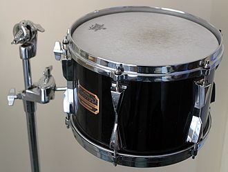

 A tom drum (also known as a tom-tom) is a cylindrical drum with no snares, named from the Anglo-Indian and Sinhala language.It was added to the drum kit in the early part of the 20th century. Most toms range in size between 6 and 20 inches (15 and 51 cm) in diameter, though floor toms can go as large as 24 inches (61 cm).
The drum called "Thammattama", played by the Sinhala people of Sri Lanka, is used in a number of Buddhist rituals in that country.It is commonly heard in Buddhist temples paired along with the reed instrument called horanava. This may be etymologically derived from the Tamil term "Thappattam" or "Thappu", a frame drum associated with South Indian Tamil culture.However, the tom-tom drums on the Western drum set clearly resemble the Sri Lankan version more than the frame drum.
The British colonists complained loudly about the noise generated by the "tom-toms" of the natives throughout South Asia.It is likely that the term tom-toms thus comes from their experiences in colonial Sri Lanka (then called Ceylon) or South India. The term "tom-tom" also has variants in the Telugu and Hindi languages, but only in Sri Lanka is there an indigenous drum with the same name (thammattama). Perhaps because of Westerners' lack of experience with Asian cultures, the term is often misattributed to the Chinese, given that "tam-tam" in Western classical music refers to a Chinese gong.
The first American drum set toms had no rims and were usually what were referred to as "Chinese" tom toms. The pigskin heads were tacked to the wooden shells with metal tacks. Through close collaboration with Gene Krupa's concept of fully tunable toms, the Slingerland drum and banjo company were the first, in 1936, to begin offering fully tunable tom-toms (top and bottom heads) with metal or wooden rims, tension rods, and lugs. Most Chinese toms were 10 to 14 inches in diameter, but the American drum companies were eventually producing a wider range of diameters and depths. These drums were usually clamped to the bass drum rims or sat in cradles as floor stand drums. The sizes that Krupa chose became the "standard" for many decades and they were 13 × 9″ (mounted) and 16 × 16″ (floor). Later, mounted on three (or, if larger than 16 × 16″, four) legs were attached to the floor tom designs. Together with a snare drum and a bass drum of varying size, the combination of the four drums became a "set". (The term "kit" did not appear until the mid 1960s.)
Single-headed tom-toms, also known as concert toms, have also been used in drum kits, though their use has fallen off in popularity since the 1970s. Concert toms have a single head and a shell slightly shallower than the corresponding double-headed tom. Phil Collins still uses four single-headed rack-mount toms and two floor toms (Gretsch) in his setup. They are generally easier to tune as they have no bottom head to adjust.
The term concert tom has also been used to describe double- or single-headed tom-tom drums designed for use in a concert band rather than in a drum kit.
Rototoms have no shell at all, just a single head and a steel frame. Unlike most other drums, they have a variable definite pitch and some composers write for them as a tuned instrument, demanding specific notes. They can be tuned quickly by rotating the head. Since the head rotates on a thread, this raises or lowers the head relative to the rim of the drum and so increases or decreases the tension in the head.
A gong bass drum (also known as "gong drum"), is a large, single-headed tom often sized at 20 in (51 cm) or 22 in (56 cm), with the drumhead being 2 in (5.1 cm) larger than the shell. The sound produced is similar to a bass drum, though it is more open and has longer sustain. They can be mounted with standard floor tom legs, though many drummers mount them at an angle next to the floor tom(s). Notable users include Neil Peart, Stewart Copeland, Bill Bruford, Simon Phillips, Jason Bittner, Mike Portnoy and Dom Howard.
A floor tom is a double-skin drum, most often but not always as deep as its diameter, traditionally mounted on three legs and to the drummer's right for a right-handed drummer. It is normally the deepest-toned drum played by sticks in the kit, above the bass drum but below all others, and the most resonant, more so than even the bass drum.
Here's how floor tom sounds!!